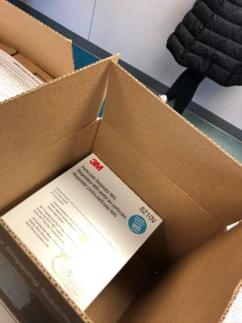
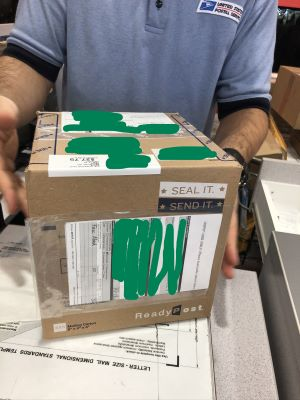

To Do Or Not To Do
One week earlier on January 31, 2020, US declared Public Health Emergency and closed boarders to all foreign nationals. The situation in US started to become serious. We might need to wear the face masks in near future, and we might need more face masks ourselves. I asked myself “Should I send these face masks or not?” This was also the question coming up during various discussions. “To Do or Not To Do” – I decided to do it.
Next day on February 10, 2020, I went to the Postal Office and I was told that there is no guarantee on when the package would arrive. I still decided to do it. Hence, I spent whole morning in the Post Office to fill different forms and to pack the boxes. Trust me, it was a big deal to get all three boxes correct and I did spend 4 hours to do this. With a lot of sweat too.
 
One embarrassing thing was that US Custom required the English version of the recipient’s information, name, address etc. I am not good at Chinese phonetic alphabet, so I made a lot of mistakes.
×